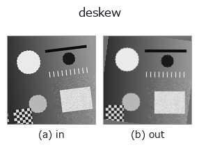

geometry op• Datenarten: image → image
• Aufruf: fullseye.apply(img, "deskew", a=0.5, b=0.5) (das 2-D-Modell ist ein Bild plus zwei skalare Regler a,b∈[0,1])

*Die Abbildung ist die tatsächliche Ausgabe auf einer synthetischen 128×128-Eingabe. Links Eingabe, rechts Ausgabe. Punktwolken als Draufsicht-Streudiagramm (Helligkeit = z), 1-D-Reihen als Linie, Volumen als Maximum-Projektion entlang z, Videos als mittleres Bild, komplexe Bilder als Betrag; Rückgabewerte, die kein Bild ergeben, werden als Werte gezeigt.*
Regler a durchfahren (0,1 / 0,5 / 0,9, der andere Regler auf Standard):
▸ deskew: knob a sweep (docs site)
Regler b durchfahren (0,1 / 0,5 / 0,9, der andere Regler auf Standard):
▸ deskew: knob b sweep (docs site)
Stufen (die vorangehenden Ops → dieser Op, von links nach rechts):
▸ deskew: stages (docs site)
Auf anderen Bildern (synthetische Szene / Foto / Münzen. Obere Reihe: Eingaben, untere Reihe: deren Ausgaben. Regler auf Standard):
▸ deskew: other inputs (docs site)
*Keine Farb-Eingabe (H,W,3) gezeigt: dieser Op behandelt den Farbkanal als dritte Raumachse (vermischt Kanäle). Pro Kanal aufrufen.*
> Für diesen Operator gibt es noch keine Übersetzung. Es folgt der Originaltext unverändert.
傾きを測って起こす(deskew)。角度をノブで与えるのではなく、画像から推定する。
`a が探索の範囲 ±(2 + 43a)° を振る(a=0 で ±2°、a=1 で ±45°)。b` が
精緻化の刻み `1/(1 + round(9b))°` を振る(b=0 で 1° 刻み、b=1 で 0.1° 刻み。
細かいほど遅い ―― ここが取引になっている)。
判定量は横方向の射影プロファイルの差分二乗和。ある角度で回したときに行が
揃うと、行方向に潰した濃度の折れ線が最も激しく上下する。1° 刻みで粗く探し、
最良の ±1° を `b` の刻みで詰める。同点なら角度の小さい方を採るので、
構造の無い画像・空フレームでは 0°(= 入力をそのまま返す)に落ちる。
• 探索は長辺 256 画素に間引いた写しで行う(角度は間引きで変わらない)。
原寸で回すのは最後の 1 回だけ。512x512 で最も広い探索でも実測 121 ms。
• 点数は回転後の中央の正方形(一辺 = `min(H,W)/sqrt(2)`)だけで取る ――
どの角度でも枠内に収まる範囲なので、角の埋めかたが点数に混ざらない。
• 枠外は縁の中央値で埋める(`mode="constant")。既存の rotate_image` は
鏡映で埋めるため、帳票を起こすと四隅に鏡文字が写り込む(向こうの docstring が
自ら「枠外を背景色で埋めたい用途には向かない」と認めている)。起こしたものを
そのまま OCR・切り出しへ渡せるのが、この op の足し前。
実測の精度と限界(行間 14 画素・幅 384 画素の合成頁): `b=1`(0.1° 刻み)で
1 / 2 / 3.7 / 5 / 12 / 20° のいずれも誤差 0.00°。ただし **0.6° 未満の傾きは
0 を返す** ―― 頁の幅いっぱいでも行のずれが 1 画素に届かず、射影の鋭さが補間の
丸まりに埋もれるため。細かく測りたければ入力を大きくする(判定量は幅に比例する)。
先行研究: 射影プロファイルで傾きを測るのは古典で、Postl (1986) が分散を、
Baird (1987) が二乗和 + 粗密の角度探索を判定量にした。この op は Baird の系譜で、
新しいのは手法ではなく縁の扱いである(下記)。
★以前は差分基準が +3.0 度 ずれていた。その原因が確定した。 2026-09-17 の事前測定で、
真値 −7/−3/+3/+7 度 に対し分散基準は誤差 0.0 度、差分基準は 4 本すべて +3.0 度 ずれ、原因は
`ndimage.rotate が作る縁の人工物だろうが「mode="constant"` で消えるかは未検証」と
記録していた。塗り方ではなく見る範囲が原因だった —— 回転後の内接正方形だけで点を
取ると、差分基準でも 1/2/3.7/5/12/20 度 のすべてで誤差 0.00 度 になる(実測)。
値域は入力のまま(線形補間と縁の中央値はどちらも値域を広げない)。★空フレーム
(値域 1e-9 未満)と 8 画素未満の入力はそのまま返す。★タイル分割してはいけない
―― 角度は画像全体から 1 つ決まるもので、タイルごとに測ると各タイルが別々の角度で
回る(`scale.py` に理由つきで登録済み)。
• Leitfaden zur Familie gallery2d_geometry
• Katalog der Beispieldaten (Download-URLs / Lizenzen) — 2-D nutzt skimage.data (BSD/Public Domain) plus synthetische Bilder, 3-D nennt Download-URLs echter Datenquellen (Stanford, PDS, …).
• Herkunft und Literatur der Operatoren — die Quellen der Forschung/Verfahren, auf denen diese Operatorfamilie beruht.
• Der kanonische Algorithmus (Autor, Jahr) und seine Anwendungen stehen im Familienleitfaden oben.
Das Programm unten ist nachweislich lauffähig (gleiche Eingabe wie die Abbildung). In der Studio-Hilfe wird dieser Block zu Schaltflächen, die es sofort laden und ausführen.
rotate_img 0.58 0.50 deskew 0.50 0.50
▸ Load this pipeline · Load & run
• gallery2d_geometry — py -3.11 examples/gallery2d_geometry.py
image als Eingabe)identity · gaussian · mean_box · bilateral · unsharp · median · min_filter · max_filter
geometry)rotate_img · rescale_img · affine_warp · sk_swirl · mirror_image · transpose_region · rotate_image · zoom_image_factor
*Provenance: ops.py — 2D Operator-Registry. Diese Notiz wird von tools/opdocs.py md erzeugt (nicht von Hand bearbeiten).*
© 2026 Kazufumi Furuse — Fullseye operator documentation. Licensed under Apache-2.0.
{kind=link}
{kind=link}
{kind=link}
{kind=link}